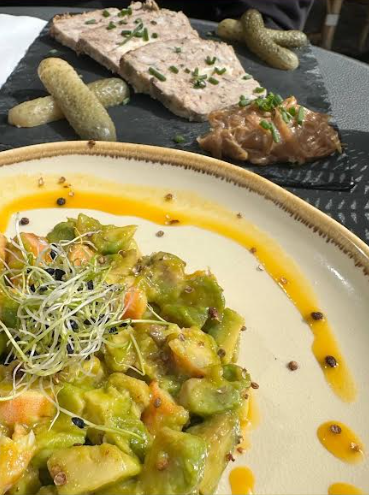
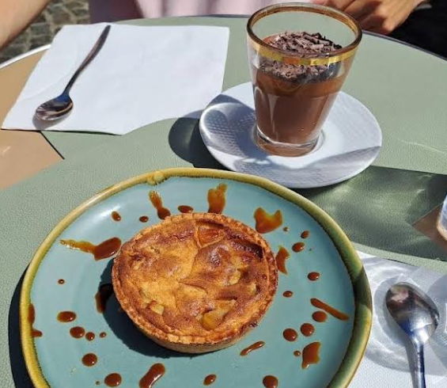
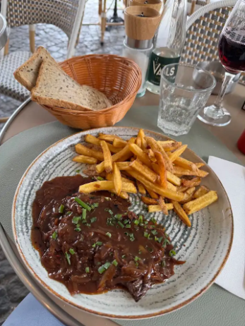

Honfleur
Un bistrot convivial & bar à vin
Cuisine maison, produits locaux, en terrasse ou en salle.
Réserver
Honfleur
Cuisine maison, produits locaux, en terrasse ou en salle.
RéserverUn bistrot familial tenu par un père et son fils, rue de la Ville, au cœur du vieux Honfleur, dans l'ancien quartier de l'Enclos dont il tient son nom. Ici, on pousse la porte comme chez des amis : ruelles pavées, façades d'autrefois et, à quelques pas, le Vieux Bassin. À table, une cuisine de bistrot faite maison avec des produits locaux, et un bar à vin pour prolonger le moment, sans se presser.
En terrasse ou en salle, appelez-nous simplement. La salle est privatisable pour vos groupes et vos occasions.

Tout est fait maison, avec des produits locaux. Toutes nos viandes sont d'origine française.
Suggestion du chef
Poêlée de Saint-Jacques, risotto
23 €
Tous nos vins en bouteille sont de propriétaires récoltants.

Tartare d'avocat & terrine de porc

Tarte normande & mousse au chocolat

Hampe de bœuf sauce échalote, une de nos suggestions
Du mardi au dimanche
10h00 – 21h00, service en continu
Fermé le lundi
En terrasse ou en salle. Salle privatisable sur demande.